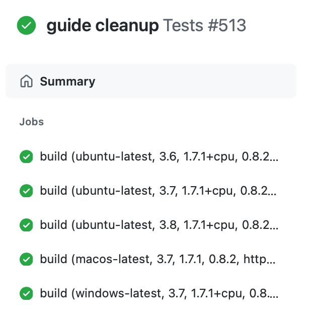

FAQ#
Frequently Asked Questions (FAQ).
No plot appears#
On the command line, add --show.
In Jupyter notebooks, use:
openpifpaf.show.Canvas.show = True
openpifpaf.show.Canvas.image_min_dpi = 200
Why evaluate with 641px instead of 640px?#
OpenPifPaf uses the standard convention of PyTorch models to pad convolutions.
Let’s start with an example: a single layer of a 3x3 conv with stride 2 that is padded with 1. For an output feature map of size 2x2, the input must be of size 3x3. This generalization holds: the input must be of size (nx * stride + 1, ny * stride + 1).
The models that OpenPifPaf uses have an intermediate layer with stride 16. Therefore, good input image sizes are multiples of 16 plus 1.
It is usually not a problem if the input size is not perfect. There will just be a small margin on the right side and bottom of the image that is not “covered” by a feature map cell.
For more info, see the section on Coordinate System.
Installation Problem#
This project uses continuous integration testing (CI). That means that a set of unit and integration tests is run on multiple versions of Linux, MacOSX and Windows for every code change. The result of these tests is here: GitHub Action Tests and click on the latest test for the main branch to see something like this:

You can click on a build job to see its terminal output. The terminal output shows all steps from cloning the repository, installing PyTorch, installing OpenPifPaf to running linting and the actual tests. If you think the list of platforms and Python versions is outdated and you want a particular combination be added to this list, please file a GitHub issue.
Matplotlib Backend#
I avoid any plotting on my training servers. However, if you insist on creating plots on the server, you might run into constraints of certain matplotlib backends not being available. If you have a backend that you know is working for your setup, you can select it by prepending any command, for example: MPLBACKEND=agg python3 -m openpifpaf.train .... This would set the backend to agg but you can use something else. This works for all Python scripts that use matplotlib.
For video on MacOSX, an interactive GUI is required that can update in real-time. I use the matplotlib backend that is called “macosx” like this: MPLBACKEND=macosx python -m openpifpaf.video --source=0 --checkpoint=shufflenetv2k16 --show --long-edge=161.
Predict is slow#
Check whether your installation of PyTorch can access CUDA for GPU processing. If the output of the command below is False, then PyTorch cannot make use of your GPU and OpenPifPaf falls back to CPU processing.
%%bash
python -c "import torch; print(torch.cuda.is_available())"
False
You can also run predict with the --debug option. Compare your output with the output in Prediction to understand which part of the process is slow for you. For a fair comparison, also use --disable-cuda because the reference in this documentation is created without CUDA.
Python.h or gcc is missing#
On most systems, you should be able to use a binary wheel (a pre-built binary compilation) so that you don’t need to install from source.
Source installation might fail with an exception complaining about a missing Python.h file or missing gcc. This means that you need the development files for Python itself and a C compiler. On Ubuntu systems, you can get this with sudo apt-get install python3-dev. For more operating systems, there is a good StackOverflow post on the topic.
SSL error#
Your Python environment might not be able to do web requests. You can download a checkpoint yourself in the browser and run all examples with --checkpoint <pathtoyourcheckpoint> command line argument.
Video output error with openpifpaf.video command#
Sometimes your system’s ffmpeg codecs are not set up. Check that you can run
ffmpeg -codecs and that you have an h264 encoder installed. In addition,
the below code is a minimal matplotlib example to write a video output
that should run without errors on your system:
import matplotlib.animation
import matplotlib.pyplot as plt
writer = matplotlib.animation.writers['ffmpeg'](fps=10.0)
fig, ax = plt.subplots(1, 1)
writer.setup(fig, 'test_animation_output.mp4')
writer.grab_frame()
writer.finish()

Further resources#
If nothing helped, check out the system configuration that is printed in the dev/Build Environment section. Run those commands on your system and compare the outputs to see whether there are any significant differences.
We also have many closed issues that you can search on GitHub and that might contain the answer you are looking for. Also feel free to open a new issue and provide as much information as possible about your problem and the environment you are running in.